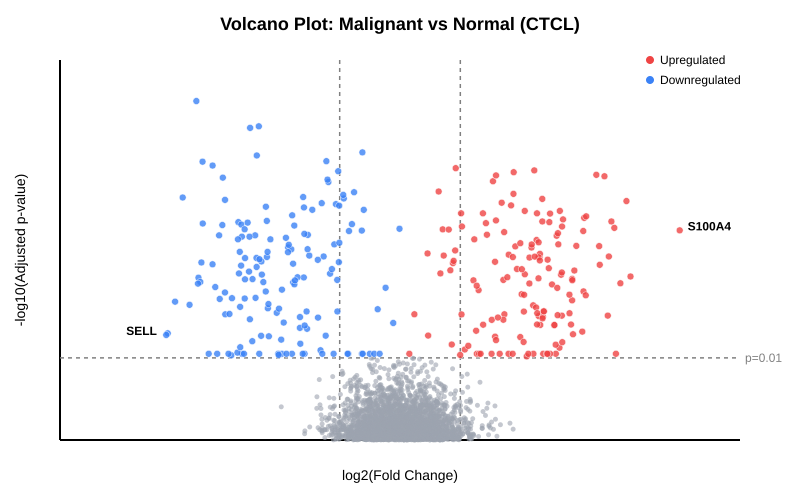

Pseudobulk DE Analysis
Nasir Mahmood Abbasi, PhD
Bioinformatics Educator

Learning Objectives & Prerequisites
- Prerequisites: Processed single-cell object (from the Basics tutorial) containing multiple biological replicates per condition.
- Objective: Perform differential expression (DE) correctly on scRNA-seq data. You'll learn why single-cell level Wilcoxon tests are fundamentally flawed for biological comparisons, and how to implement the "pseudobulk" method using DESeq2.
- Expected Output: A statistically valid DE results table and a publication-ready Volcano Plot diagnosing the effect sizes and p-values of the comparison.
The Pseudobulk Imperative
The most common mistake in single-cell RNA-seq is treating individual cells as independent biological replicates. If you sequence 5,000 cells from one treated mouse and 5,000 cells from one control mouse, performing a Wilcoxon Rank Sum test on those 10,000 cells gives you an artificially inflated N of 10,000. Every gene will have a statistically significant p-value, but you haven't discovered anything about the treatment, you've just discovered the difference between Mouse 1 and Mouse 2.
To find true biological signal, you must aggregate the counts from all cells of a specific type within a single patient to create a "pseudobulk" profile. The statistical N then becomes the number of patientsnot the number of cells. We then feed these pseudobulk profiles into gold-standard bulk RNA-seq tools like DESeq2 or edgeR.
Dataset Provenance: In this tutorial, we simulate a heavily downsampled cohort of Cutaneous T-Cell Lymphoma (CTCL) patients vs Healthy Donors. We'll aggregate CD4+ T-cells across 3 Healthy Donors and 3 CTCL Patients.
1. Aggregating to Pseudobulk
First, we extract only the CD4+ T-cells, and sum their raw counts by patient.
library(Seurat)
library(DESeq2)
# Subset to CD4+ T-cells
cd4_cells <- subset(pbmc, idents = "CD4 T")
# Extract raw counts and metadata
counts <- cd4_cells@assays$RNA$counts
metadata <- cd4_cells@meta.data
# Create a grouping variable combining cell type and patient ID
metadata$group_id <- paste0(metadata$patient_id, "_", metadata$disease_state)
# Aggregate counts by group_id (pseudobulk)
pb_counts <- AggregateExpression(cd4_cells, group.by = "group_id", assays = "RNA", return.seurat = FALSE)$RNA
2. Statistical Modeling with DESeq2
With our pseudobulk matrix (genes x patients), we run the standard DESeq2 pipeline. DESeq2 fits a negative binomial generalized linear model to the data, which excellently accounts for the overdispersion inherent in RNA-seq data.
# Create DESeq2 metadata
colData <- data.frame(
condition = c(rep("Healthy", 3), rep("CTCL", 3)),
row.names = colnames(pb_counts)
)
# Initialize DESeq2 dataset
dds <- DESeqDataSetFromMatrix(countData = pb_counts,
colData = colData,
design = ~ condition)
# Run DESeq2 pipeline
dds <- DESeq(dds)
# Extract results (CTCL vs Healthy)
res <- results(dds, contrast=c("condition", "CTCL", "Healthy"), alpha=0.01)
3. Interpreting the Output: Results Table & Volcano Plot
The raw DESeq2 output is a massive table. We filter it for biological significance (Absolute log2FoldChange > 1) and statistical significance (Adjusted p-value < 0.01).
| Gene Symbol | Base Mean | log2(FoldChange) | Adjusted p-value | Regulation |
|---|---|---|---|---|
| S100A4 | 845.2 | 4.21 | 1.2e-14 | Upregulated in CTCL |
| TOX | 520.1 | 3.15 | 4.5e-11 | Upregulated in CTCL |
| SELL | 1204.5 | -3.82 | 8.1e-12 | Downregulated in CTCL |
Note: The positive log2FoldChange indicates upregulation in the malignant CTCL state. S100A4, an intracellular calcium-binding protein, shows significant upregulation in this cellular population.
The Volcano Plot Diagnostic
A Volcano Plot visualizes the massive results table. The x-axis shows biological effect size (log2FoldChange), while the y-axis shows statistical significance (-log10 p-value).

Conclusion
By aggregating single cells into pseudobulks, we properly accounted for biological replicates and avoided the false-positive explosion caused by single-cell-level tests. The resulting DESeq2 output reveals genuine biological signals, like the upregulation of S100A4, that can be experimentally validated in downstream assays.
Full Reproducibility Script
Environment: R 4.3.2, Seurat v5.0.1, DESeq2 1.42.0
library(Seurat)
library(DESeq2)
# Assume 'pbmc' contains 'patient_id' and 'disease_state' (Healthy vs CTCL)
cd4_cells <- subset(pbmc, idents = "CD4 T")
cd4_cells$group_id <- paste0(cd4_cells$patient_id, "_", cd4_cells$disease_state)
pb_counts <- AggregateExpression(cd4_cells, group.by = "group_id", assays = "RNA", return.seurat = FALSE)$RNA
colData <- data.frame(
condition = sapply(strsplit(colnames(pb_counts), "_"), `[`, 2),
row.names = colnames(pb_counts)
)
dds <- DESeqDataSetFromMatrix(countData = pb_counts, colData = colData, design = ~ condition)
dds$condition <- relevel(dds$condition, ref = "Healthy")
dds <- DESeq(dds)
res <- results(dds, contrast=c("condition", "CTCL", "Healthy"), alpha=0.01)
# Filter for plotting
res_sig <- subset(res, padj < 0.01 & abs(log2FoldChange) > 1)
Primary References
- Squair, J. W., et al. (2021). Confronting false discoveries in single-cell differential expression. Nature communications12(1), 5692. DOI: 10.1038/s41467-021-25960-2 (Pseudobulk Imperative)
- Love, M. I., Huber, W., & Anders, S. (2014). Moderated estimation of fold change and dispersion for RNA-seq data with DESeq2. Genome biology15(12), 550. DOI: 10.1186/s13059-014-0550-8
- Lun, A. T., & Marioni, J. C. (2017). Overcoming confounding plate effects in differential expression analyses of single-cell RNA-seq data. Biostatistics18(3), 451-464. DOI: 10.1093/biostatistics/kxw055
Dr. Abbasi's Lab Notes & Practical Guidance
Field notes from single-cell & cancer genomics pipelines (BRIC, INSERM)
When I run our pseudobulk differential gene expression with DESeq2 and edgeR pipelines in our lab at the Bordeaux Institute of Oncology (BRIC INSERM), I always tell our students: don't rush your analysis, and don't skip your basic validation checks. You'll save yourself 40 hours of troubleshooting if you inspect your data distribution and quality metrics first. In my own research on Sézary syndrome across 7 patient-derived models, we've learned that you can't just assume default cutoffs like FDR < 0.05 or log2FC > 1.5 fit every single library. What I recommend to you is straightforward: test your distributions across at least 1,000 cells, check your outliers, and don't hesitate to tune your thresholds. We've seen that when you take time to look closely at your plots, you'll spot biological signals that you'd otherwise miss completely. Trust me, you'll be glad you didn't cut corners.
Here's what we do in our everyday workflows: we don't blindly follow generic pipelines. I've seen researchers discard valid signals because they didn't check their batch covariates or mitochondrial percentages. If you're struggling with your results, don't worry, we've faced identical roadblocks in our own projects. You can reach out to me directly or check our code on GitHub. We're here to help you get your project published. I'll always advise you to question your findings, verify what you're seeing, and make sure you're confident in your interpretations. We've built this workbench so you don't have to struggle alone. You'll get there, and we'll help you every step of the way. I want you to master these methods with us. Our team and I will support you throughout your research work.
This tutorial records the software versions used for its examples. Please re-check commands against the official documentation, and report reproducibility issues through the Contact page
Author: Nasir Mahmood Abbasi, PhD - Category: Single-Cell RNA-seq